Fund Foundry is a self-initiated product design project that walks through my full process — from a one-line brief to production-ready design. It’s a goal-based savings app with an on-demand AI assistant: visual, motivating, simple, with expert help when you ask for it.
Case Study 02 · 2025
FUND foundry
End-to-end product design for a goal-based savings web app — visual, motivating, simple, with an AI assistant on call when you need one.
.jpg)
01 — Summary Project summary
Brief
Design a sleek web app where users can automatically organise, grow and track their savings across different goals — holidays, emergencies, investments. AI chat is available on demand to answer questions, give advice and suggest savings optimisations, but it’s not the main way users interact.
Goal
Empower users to save more effectively by making goal-based saving visual, motivating, and simple — with an AI helper when they need one.
Problem statement
People often have multiple saving goals but struggle to keep them organised or prioritise properly. Most finance apps focus on “budgeting” rather than visualising and encouraging the act of saving itself. Users want simple, flexible tools that grow with them — plus expert help when they ask for it.
My approach
My approach to product design resembles the widely established “double-diamond” method — progressively working through research, low- and high-fidelity design, prototyping, and hand-off.
Communication is critical at every step. Ideally I’d be checking in with users to validate at the milestones of low- and high-fidelity design, and with team members in front-end, back-end and data engineering to ensure feasibility.
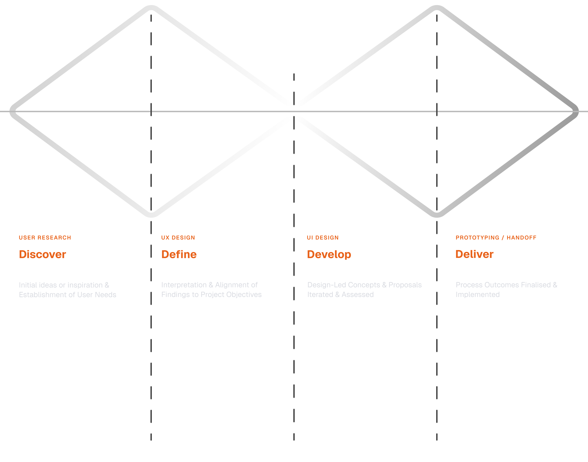
02 — Research UX research
Questions and considerations
After defining the brief and problem statement I had some early questions and considerations. In a real project I’d use these as the basis of user-interview prompts — out of scope here, so I worked through them myself: thinking through potential answers, researching competitors, and gaining clarity through the UX practices that followed.
Visual research
I wanted to look beyond features and USPs into the visual aesthetic of competitors — to see how this app could situate itself in the market, and to make sure the styling stayed inclusive and aligned with the expectations of my user personas.
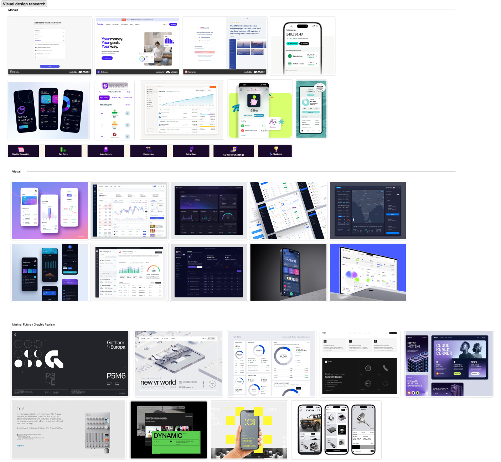
03 — UX Design UX design
Information architecture
With a firmer concept emerging through research I started laying the ground-work for the application’s scope. In FigJam I sketched the basic information architecture.
I was conscious this would likely be tweaked as the process went on — other ideas might emerge or features make sense in different areas. I treated it as a guide, not a restrictive authority.
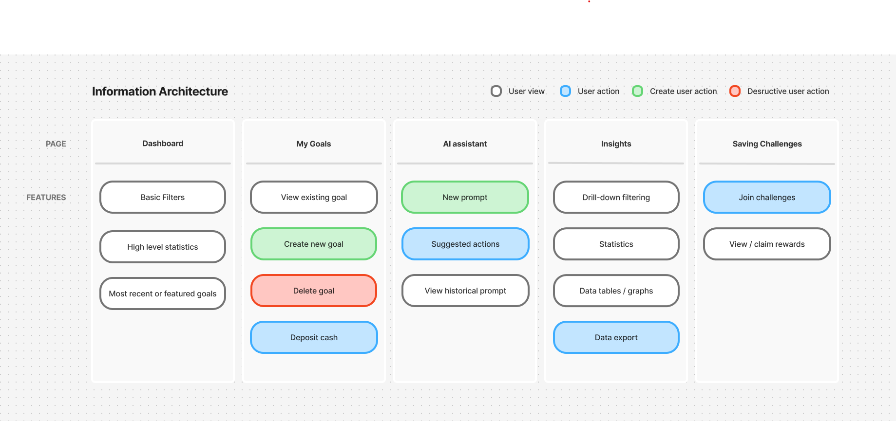
User flow
After establishing the application’s overarching structure I dove into specific user flows. Creating a goal and then depositing cash felt like the corner-stone of the product — one every user would engage with.
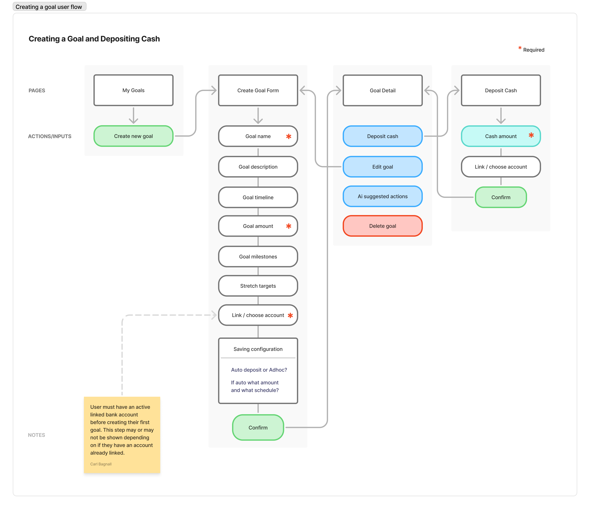
If I had access to real users this would be something I’d validate to ensure their needs are met and there are no missing features.
Wireframes
Once user flows were established I moved onto quick iterative low-fidelity wireframes in FigJam. This gave me a chance to experiment with layout and identify where I could componentise UI before higher-fidelity design.
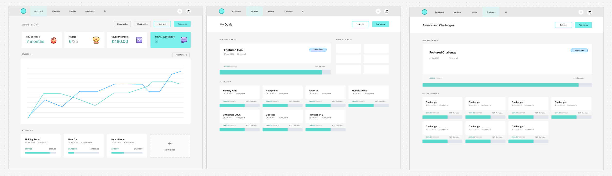
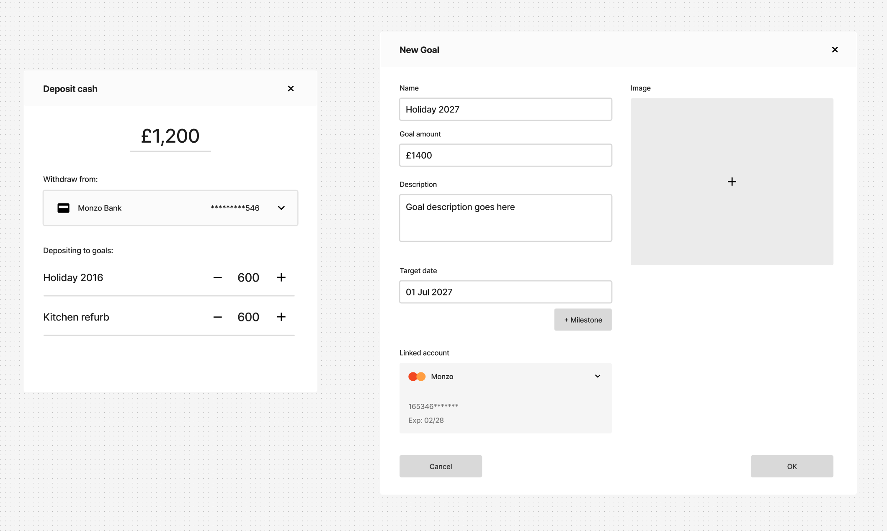
This is another natural milestone — and through experience, often a great moment to check in with users. Validating with wireframes and early flows lets users picture how the final version will work, opening the door to critique and suggestions that can shape the result.
04 — UI Design UI design
Defining visual style and brand
Because Fund Foundry is a “new” product not living inside an established corporate identity, the transition into higher-fidelity design wasn’t just about rendering flows in pixel-perfect detail — it was about defining the product brand and applying that visual consistency throughout the UI.
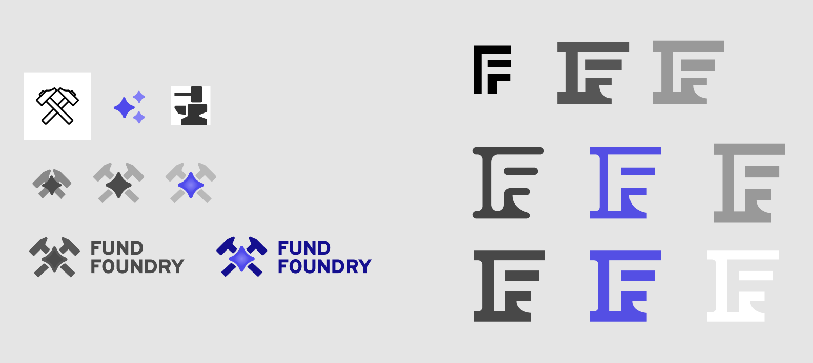
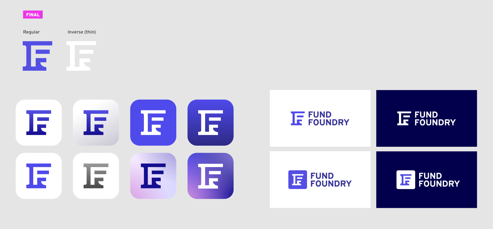
Components within a design system
An important part of high-fidelity design is componentising elements likely to be re-used. These compose my component library — which feeds back into a wider design system, out of scope here. A dedicated component page in Figma kept components organised and ready to be drawn into designs.
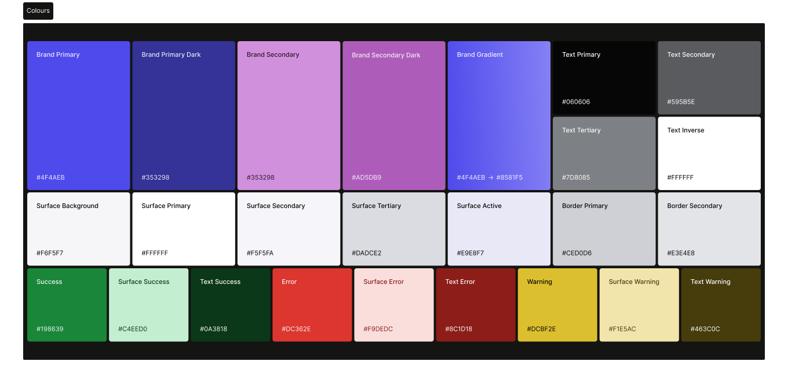
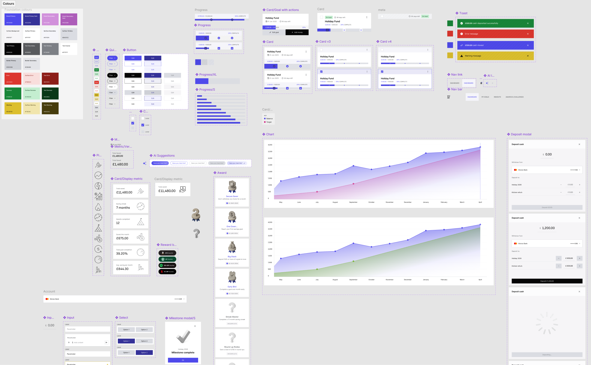
Screens and flows
The design process naturally moves through the screens and flows most pertinent to the project — progressing from individual screens to fleshed-out flows that can be prototyped and broken down for engineering hand-off.
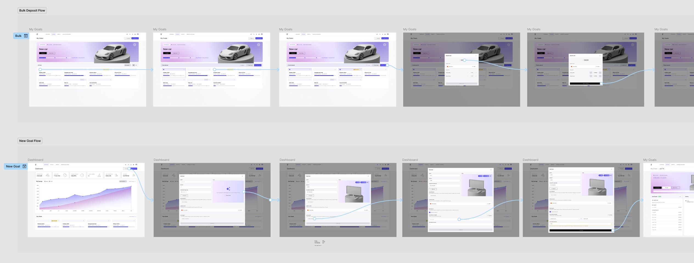
Without the engineering effort that would normally happen alongside design, I’m afforded the freedom to conceptualise a “north-star” version. In a real project I’d expect realistic restrictions on time and scope from product, plus technical constraints from development leads — restrictions that reshape the process to deliver designs that meet user and business goals on a deadline.
Prototyping and sign-off
Once a flow is designed in high-fidelity I use Figma to convert the screens into an interactive prototype. I take that into what I call a “4-voice” sign-off: a representative from Engineering, Users, Product and of course Design — a definitive sign-off on a feature or workflow item.
Engineering hand-off
The final step after sign-off is to break the design down for engineering — separating “in-progress” work from a hand-off environment, so engineers only ever build finalised, signed-off screens. I leave notes alongside specific interaction requirements that are difficult to express in static design.
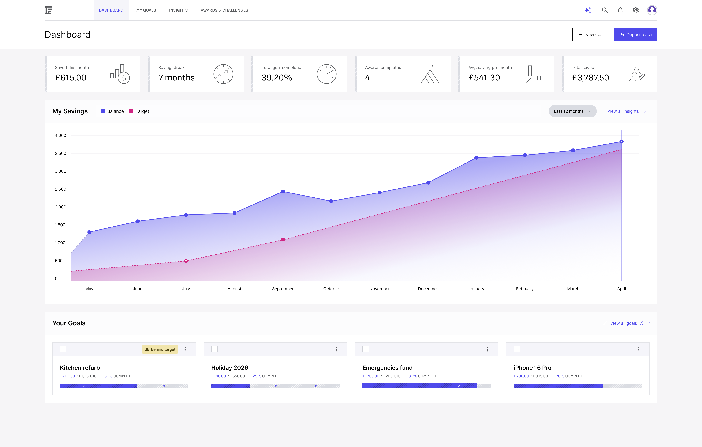

.png)